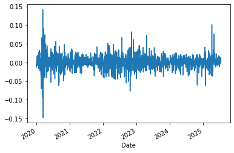
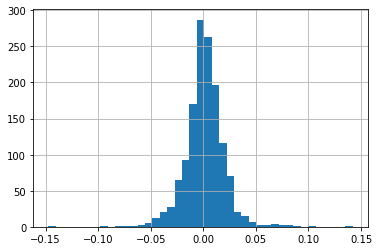

Introduction to Statistics in Finance
Contents
import pandas as pd
import numpy as np
Introduction to Statistics in Finance#
Many fields in finance rely on some sort of data analysis
For example fundamental analysis of a business:
various numbers from the company itself (i.e. from the balance sheet)
indicators representing the overall market
Results drive decisions, e.g. for an investement
There are many well established techniques and statistics for pricing financial products.
Some techniques more prominent since the dawn of powerful algorithms and artificial intelligence
Returns#
In order for an investment to be profitable, the money it yields must be higher than the inital investment made (plus transaction costs).
Assess so called return, usually discrete: relative change in investment value \(S\).
Note here that one time step \(t\) is of arbitrary length, e.g. daily or monthly
Additivity#
Returns my be based on different time spans \(\rightarrow\) aggreagte somehow
The property we are looking for is called addititvity: sum shorter-scale returns to get the larger-scale returns
Note that we can’t just split monthly returns into daily returns, this requires making assumptions on the distribution
Daily and weekly returns:
To calculate weekly returns from daily returns, we mustn’t use the daily return as is.
time \(t\) |
0 |
1 |
2 |
3 |
4 |
5 |
6 |
7 |
|---|---|---|---|---|---|---|---|---|
prices \(S_t\) |
100 |
110 |
121 |
110 |
132 |
105 |
112 |
105 |
return \(r_t\) |
— |
0.10 |
0.10 |
-0.09 |
0.2 |
-0.20 |
0.07 |
-0.06 |
If we simply added all returns, we’d find a weekly return of \(r_{0,7} = 0.12\).
However, using the formula from above, we find that
$\( r_{0,7} = \frac{S_7}{S_{0}} - 1 = \frac{105}{100} - 1 = 0.05 \)$
and conclude that indeed daily returns cannot simply be added up in order to yield the weekly return.
We can calculate discrete returns simply by using a method of a Series object: .pct_change().
Note the NaN value for the first line.
df = pd.DataFrame({
'S': [100, 110, 121, 110, 132, 105, 112, 105],
},
index=list(range(8)))
df
| S | |
|---|---|
| 0 | 100 |
| 1 | 110 |
| 2 | 121 |
| 3 | 110 |
| 4 | 132 |
| 5 | 105 |
| 6 | 112 |
| 7 | 105 |
df['discrete_returns'] = df['S'].pct_change()
df
| S | discrete_returns | |
|---|---|---|
| 0 | 100 | NaN |
| 1 | 110 | 0.100000 |
| 2 | 121 | 0.100000 |
| 3 | 110 | -0.090909 |
| 4 | 132 | 0.200000 |
| 5 | 105 | -0.204545 |
| 6 | 112 | 0.066667 |
| 7 | 105 | -0.062500 |
Portfolios and cross-sectional additivity#
A portfolio is a collection of investments, e.g. stocks. Portfolios are allocated differently, i.e., by a degree of risk. We can describe a portfolio’s value by the sum of the value of its constituents.
We define the value of a single position \(i\) by multiplying the number of stocks \(N_i\) with the stock value \(S_i\)
The Total portfolio value is the sum of all position values:
The weight of company \(i\) in the portfolio is then $\( w_i = \frac{P_i}{P} = \frac{N_i \cdot S_i}{\sum_j N_j \cdot S_j},\)\( with \)\sum_i w_i = 1$.
With those weights, we can calculate the portfolio return (cross-sectional additivity) as weighted sum of the company returns \(R_i\) $\( R_p = \sum_i w_i \, R_i \)$
We talk about a naive portfolio of \(J\) stocks when all weights are equal \(w = w_1 = w_2 = ... = w_J\). In this case, the weighted sum becomes the mean of all stock returns \(R_i\), as \(w = \frac{1}{J}\) and the portfolio return ist $\(R_p = \frac{1}{J} \sum_i^JR_i = mean(R_i)\)$
Portfolio return and cross-sectional additivity#
We can show that property using the definitons from above
Price evolution for single stock \(i\):
$\( P_{t+1}^i = P_t^i \,(1 + r_{t+1}^i) \)$Plugging this into the Portfolio value:
$\( P_{t+1}^{PF} = \sum_i P_{t+1}^i = \sum_i P_t^i \,(1 + r_{t+1}^i)\)$With the “regular” formula for discrete returns, the Portfolio return is:
Let’s have a look at the following data:
time \(t\) |
0 |
1 |
2 |
3 |
4 |
5 |
6 |
7 |
|---|---|---|---|---|---|---|---|---|
company A \(A_t\) |
100 |
110 |
121 |
110 |
132 |
105 |
112 |
105 |
company B \(B_t\) |
100 |
120 |
124 |
118 |
117 |
135 |
128 |
115 |
For simplicity, we will assume to invest the same amount of money in both stocks. This gives initial portfolio weights \(w_1=w_2=0.5\). For such a naive portfolio, we can then just apply the mean, i.e. the portfolio return on day \(t\) is just the mean of all returns \(r_{i,t}\) for all companies \(i\).
Calculate the daily returns of the portfolio using pandas:
df = pd.DataFrame({
'A': [100, 110, 121, 110, 132, 105, 112, 105],
'B': [100, 120, 124, 118, 117, 135, 128, 115],
},
index=list(range(8)))
df
| A | B | |
|---|---|---|
| 0 | 100 | 100 |
| 1 | 110 | 120 |
| 2 | 121 | 124 |
| 3 | 110 | 118 |
| 4 | 132 | 117 |
| 5 | 105 | 135 |
| 6 | 112 | 128 |
| 7 | 105 | 115 |
When we want to calculate the returns for a naive portfolio, we simply calculate the mean over all returns. This give us the daily (naive) portfolio returns over time.
df['A_return'] = df.A.pct_change()
df['B_return'] = df.B.pct_change()
# mean applied to axis=1, means we calculate the row mean (axis=0 will calculate the column mean)
df.loc[1:,'naive_pf_return'] = df.loc[1:,['A_return', 'B_return']].mean(axis=1)
df
| A | B | A_return | B_return | naive_pf_return | |
|---|---|---|---|---|---|
| 0 | 100 | 100 | NaN | NaN | NaN |
| 1 | 110 | 120 | 0.100000 | 0.200000 | 0.150000 |
| 2 | 121 | 124 | 0.100000 | 0.033333 | 0.066667 |
| 3 | 110 | 118 | -0.090909 | -0.048387 | -0.069648 |
| 4 | 132 | 117 | 0.200000 | -0.008475 | 0.095763 |
| 5 | 105 | 135 | -0.204545 | 0.153846 | -0.025350 |
| 6 | 112 | 128 | 0.066667 | -0.051852 | 0.007407 |
| 7 | 105 | 115 | -0.062500 | -0.101562 | -0.082031 |
Characteristics of returns#
Usually, returns exhibit the following:
expected returns are close to zero (the shorter the time span, the smaller the expected return)
weakly stationary (i.e. constant expected value and variance over time) but usually volatility clustering
skewed distribution
From these items alone, we can start an analysis of stock returns by looking at some (standardized) moments of the empirical data:
the average return as an estimate of the expected return
the empirical variance or standard deviation/volatility
Use pandas, by calling the appropriate methods.
We will have a look at real-world data, downloading close prices using the yfinance package and calculating the returns.
import yfinance as yf
msft = yf.Ticker('MSFT')
msft = msft.history(
start='2020-01-01',
period=None
)
temp = msft[['Close']].copy()
temp.head(1)
| Close | |
|---|---|
| Date | |
| 2020-01-02 00:00:00-05:00 | 153.042313 |
temp.reset_index(inplace=True)
# temp = temp.reset_index()
temp.head(1)
| Date | Close | |
|---|---|---|
| 0 | 2020-01-02 00:00:00-05:00 | 153.042313 |
msft = msft[['Close']].copy()
msft['daily_disc_return'] = msft['Close'].pct_change()
msft.dropna(inplace=True)
msft.head(2)
| Close | daily_disc_return | |
|---|---|---|
| Date | ||
| 2020-01-03 00:00:00-05:00 | 151.136642 | -0.012452 |
| 2020-01-06 00:00:00-05:00 | 151.527298 | 0.002585 |
avg_return = msft.daily_disc_return.mean()
vola = msft.daily_disc_return.std()
print(f'average return {np.round(avg_return,4)}')
print(f'volatility {np.round(vola, 4)}')
average return 0.0011
volatility 0.0191
As we discussed in earlier chapter, it is always recommended to take a look at some charts.
We can plot returns over time as well as look at the distribution.
msft.daily_disc_return.plot()
<AxesSubplot:xlabel='Date'>

msft.daily_disc_return.hist(bins=41)
<AxesSubplot:>

The CAPM factor-model and excess returns#
The Captial Asset Pricing Model in its most simple form (Sharpe, Lintner) quantifies an assets risk with regard to non-diversifiable market risk.
Risk can usually be attributed to two sources: idiosyncratic and systematic (market) risk
Idiosyncratic risk can be eliminated by constructing a diversified portfolio, systematic risk remains
Use ordinary least squares (OLS) model to estimate:
assume a risk-free rate of \(r_{f,t}=0\):
about the coefficients#
In general \(\alpha_i\) should not be statistically significant for the model to be valid
Assuming it in fact isn’t, \(\beta_i\) tells us about the sensitivity of the asset with regard to market risk:
for \(\beta=1\) an asset’s expected return is assumed to match the expected market return
for \(\beta >1\) an asset is more volatile than the market and thus considered more risky than the market
for \(\beta <1\) an asset is less volatile than the market and considered less risky than the market
Note:
we can never know the market return which we use as a benchmark \(\rightarrow\) use a proxy like the S&P 500
import yfinance as yf
import pandas as pd
msft = yf.Ticker('MSFT').history(start="2020-01-01").reset_index()
sp_500 = yf.Ticker('^GSPC').history(start="2020-01-01").reset_index()
rf = 0.01
sp_500.head(1)
| Date | Open | High | Low | Close | Volume | Dividends | Stock Splits | |
|---|---|---|---|---|---|---|---|---|
| 0 | 2020-01-02 00:00:00-05:00 | 3244.669922 | 3258.139893 | 3235.530029 | 3257.850098 | 3459930000 | 0.0 | 0.0 |
msft.head(1)
| Date | Open | High | Low | Close | Volume | Dividends | Stock Splits | |
|---|---|---|---|---|---|---|---|---|
| 0 | 2020-01-02 00:00:00-05:00 | 151.289138 | 153.147139 | 150.860371 | 153.042328 | 22622100 | 0.0 | 0.0 |
# excess returns by subtracting r_f
# if r_f is not constant, but changing over time, we would merge the r_f column to the discrete returns
# to match the days, then subtract it from the returns to get excess returns
msft['daily_excess_return'] = msft.Close.pct_change() - rf
sp_500['daily_excess_return'] = sp_500.Close.pct_change() - rf
sp_500.isnull().sum()
Date 0
Open 0
High 0
Low 0
Close 0
Volume 0
Dividends 0
Stock Splits 0
daily_excess_return 1
dtype: int64
msft.dropna(inplace=True)
sp_500.dropna(inplace=True)
sp_500.head(1)
| Date | Open | High | Low | Close | Volume | Dividends | Stock Splits | daily_excess_return | |
|---|---|---|---|---|---|---|---|---|---|
| 1 | 2020-01-03 00:00:00-05:00 | 3226.360107 | 3246.149902 | 3222.340088 | 3234.850098 | 3484700000 | 0.0 | 0.0 | -0.01706 |
sp_500.columns = [el+'_sp' for el in sp_500.columns]
sp_500.head(1)
| Date_sp | Open_sp | High_sp | Low_sp | Close_sp | Volume_sp | Dividends_sp | Stock Splits_sp | daily_excess_return_sp | |
|---|---|---|---|---|---|---|---|---|---|
| 1 | 2020-01-03 00:00:00-05:00 | 3226.360107 | 3246.149902 | 3222.340088 | 3234.850098 | 3484700000 | 0.0 | 0.0 | -0.01706 |
msft.head(1)
| Date | Open | High | Low | Close | Volume | Dividends | Stock Splits | daily_excess_return | |
|---|---|---|---|---|---|---|---|---|---|
| 1 | 2020-01-03 00:00:00-05:00 | 150.850807 | 152.403898 | 150.603064 | 151.136642 | 21116200 | 0.0 | 0.0 | -0.022452 |
msft_reg = pd.merge(msft[['Date', 'daily_excess_return']],
sp_500[['Date_sp', 'daily_excess_return_sp']],
left_on='Date', right_on='Date_sp') #on=['Date']
#msft_reg.drop(columns=['Date_sp'], inplace=True)
# msft_reg = msft_reg[['Date', 'daily_excess_return', 'daily_excess_return_sp']]
msft_reg.head(2)
| Date | daily_excess_return | Date_sp | daily_excess_return_sp | |
|---|---|---|---|---|
| 0 | 2020-01-03 00:00:00-05:00 | -0.022452 | 2020-01-03 00:00:00-05:00 | -0.017060 |
| 1 | 2020-01-06 00:00:00-05:00 | -0.007415 | 2020-01-06 00:00:00-05:00 | -0.006467 |
import statsmodels.api as sm
X = sm.add_constant(msft_reg['daily_excess_return_sp'])
#X = msft_reg['daily_excess_return_sp']
y = msft_reg['daily_excess_return']
lr_msft = sm.OLS(y, X).fit()
print(lr_msft.summary())
OLS Regression Results
===============================================================================
Dep. Variable: daily_excess_return R-squared: 0.665
Model: OLS Adj. R-squared: 0.665
Method: Least Squares F-statistic: 2755.
Date: Fri, 18 Jul 2025 Prob (F-statistic): 0.00
Time: 09:35:23 Log-Likelihood: 4293.3
No. Observations: 1391 AIC: -8583.
Df Residuals: 1389 BIC: -8572.
Df Model: 1
Covariance Type: nonrobust
==========================================================================================
coef std err t P>|t| [0.025 0.975]
------------------------------------------------------------------------------------------
const 0.0019 0.000 5.179 0.000 0.001 0.003
daily_excess_return_sp 1.1469 0.022 52.493 0.000 1.104 1.190
==============================================================================
Omnibus: 202.086 Durbin-Watson: 1.974
Prob(Omnibus): 0.000 Jarque-Bera (JB): 2186.880
Skew: 0.266 Prob(JB): 0.00
Kurtosis: 9.120 Cond. No. 73.7
==============================================================================
Notes:
[1] Standard Errors assume that the covariance matrix of the errors is correctly specified.
lr_msft.params
const 0.001870
daily_excess_return_sp 1.146925
dtype: float64
\(\rightarrow\) Microsoft is somewhat sensitive towards market risk, since \(\beta > 1\)
lr_msft.pvalues
const 2.562784e-07
daily_excess_return_sp 0.000000e+00
dtype: float64
\(\rightarrow\) In accordance with the CAPM, \(\alpha\) is not significant, i.e. its p-value is larger than 5%